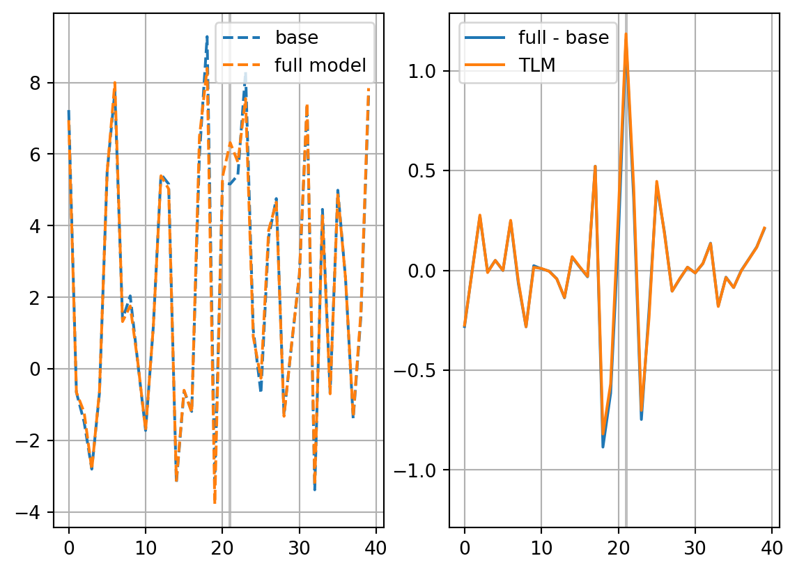
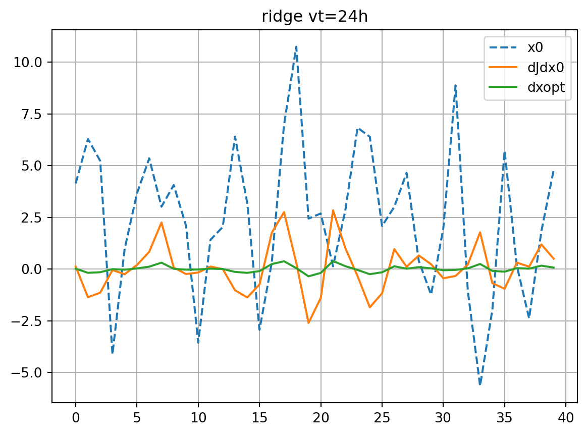

Code
import os
import sys
import numpy as np
import matplotlib.pyplot as plt
from matplotlib.colors import Normalize
from numpy.random import default_rngimport os
import sys
import numpy as np
import matplotlib.pyplot as plt
from matplotlib.colors import Normalize
from numpy.random import default_rng\[ \frac{\mathrm{d}X_n}{\mathrm{d}t} = -X_{n-2}X_{n-1}+X_{n-1}X_{n+1}-X_n+F \tag{1}\]
sys.path.append(os.environ['HOME']+'/Development/pydpac/model')
from lorenz import L96
nx=40
dt=0.05/6.0 # = 1 hour
F=8.0
model = L96(nx,dt,F)nx=40 F=8.0 dt=0.008333333333333333# initialize random seed
rng = default_rng(509)
# spinup
x = rng.normal(0.0,size=nx,scale=1.0)
nstep = 500
for i in range(nstep):
x = model(x)
vtmax = 72 # hours
vt = 24 # hours
it = 21 # target point
t = [0]
xb = [x]
for i in range(vtmax):
x = model(x)
t.append(i)
xb.append(x)
plt.plot(xb[0],label='initial')
plt.plot(xb[vt],label='valid')
plt.plot([it],xb[vt][it],marker='o',c='r')
plt.grid()
plt.legend()
plt.show()
mp = plt.pcolormesh(np.arange(nx),t,np.array(xb),\
shading='auto',norm=Normalize(-10,10),cmap='coolwarm')
if vt < vtmax:
plt.hlines([vt],0,nx-1,colors='k',ls='dashed')
plt.colorbar(mp)
plt.show()

\[ \frac{\partial J}{\partial \mathbf{x}_0}=\mathbf{M}^\mathrm{T}\frac{\partial J}{\partial \mathbf{x}_T} \tag{2}\] \[ J=\frac{1}{2}x_T(i_t)^2 \] \[ \frac{\partial J}{\partial \mathbf{x}_T}=\left\{ \begin{matrix} x_T(i_t) & i=i_t\\ 0 & i\ne i_t \end{matrix}\right. \]
Langland et al. (2002) \[ \delta \mathbf{x}_0^\mathrm{opt}=-\lambda\frac{\partial J}{\partial \mathbf{x}_0} \tag{3}\] \[ \lambda = \frac{J}{(\partial J/\partial \mathbf{x}_0)^\mathrm{T}\partial J/\partial \mathbf{x}_0} \tag{4}\]
def calc_dxopt(dJdx0,vt):
J = 0.5 * xb[vt][it]*xb[vt][it]
optscale = J / np.dot(dJdx0,dJdx0)
dxopt = - optscale*dJdx0
return dxoptdef check_djdx(dJdx0,vt,label='dJdx0'):
plt.plot(xb[0],ls='dashed',label='x0')
plt.plot(dJdx0,label=label)
plt.plot(dxopt,label='dxopt')
plt.grid()
plt.legend()
plt.title(f'vt={vt}h')
plt.show()
xp = xb[0] + dxopt
dxp = dxopt.copy()
for i in range(vt):
# nonlinear evolution
xp = model(xp)
# TLM evolution
dxp = model.step_t(xb[i],dxp)
fig, axs = plt.subplots(ncols=2)
axs[0].plot(xb[vt],ls='dashed',label='base')
axs[0].plot(xp,ls='dashed',label='full model')
axs[1].plot(xp-xb[vt],label='full - base')
axs[1].plot(dxp,label='TLM')
ymin, ymax = axs[1].get_ylim()
ylim = max(-ymin,ymax)
axs[1].set_ylim(-ylim,ylim)
for ax in axs:
ax.vlines([it],0,1,colors='gray',alpha=0.5,transform=ax.get_xaxis_transform(),zorder=0)
ax.grid()
ax.legend()
plt.show()def asa(vt,plot_hov=False):
xT = xb[vt].copy()
x0 = xb[0]
dJdxT = np.zeros_like(x0)
dJdxT[it] = xT[it]
dJdx0 = dJdxT.copy()
dJdx = [dJdxT]
for i in range(vt):
dJdx0 = model.step_adj(xb[vt-i-2],dJdx0)
dJdx.append(dJdx0)
if plot_hov:
mp = plt.pcolormesh(np.arange(nx),t[0:vt+1][::-1],np.array(dJdx),\
shading='auto',norm=Normalize(-5,5),cmap='coolwarm')
plt.colorbar(mp)
plt.show()
return dJdx0dJdx0 = asa(vt, plot_hov=True)
dxopt = calc_dxopt(dJdx0,vt)
check_djdx(dJdx0,vt)


## Ensemble trajectories
def create_ens(nens,plot=False):
xe0 = rng.normal(0.0,size=(nx,nens),scale=1.0)
nstep = 500
for i in range(nstep):
xe0 = model(xe0)
xp = xe0 - xe0.mean(axis=1)[:,None]
diagpf = np.diag(np.dot(xp,xp.T))/(nens-1)
xstd = np.sqrt(diagpf.mean())
xp = xp * 0.5 / xstd # rescaling
xe0 = xp + xb[0][:,None]
if plot:
plt.plot(xe0,ls='dotted',c='gray')
plt.plot(xb[0])
plt.title('initial')
plt.show()
xe = [xe0]
for i in range(vtmax):
xe0 = model(xe0)
xe.append(xe0)
if plot:
plt.plot(xe[vt],ls='dotted',c='gray')
plt.plot(xb[vt])
plt.title('final')
plt.show()
return xe
def generate_prtb(vt,xb,xe):
nens = xe[0].shape[1]
Je = np.zeros(nens)
for k in range(nens):
Je[k] = xe[vt][it,k]**2/2.0
#print(Je)
X0 = xe[0] - xb[0][:,None]
## standardization
Jem = np.mean(Je)
sJe = np.std(Je)
Jes = (Je - Jem) / sJe
X0m = np.mean(X0,axis=1)
sX0 = np.std(X0,axis=1)
X0s = (X0 - X0m[:,None]) / sX0[:,None]
return Je, Jes, Jem, sJe, X0, X0s, X0m, sX0nens = 40
print(f"Nens={nens}")
xe = create_ens(nens, plot=True)
Je, Jes, Jem, sJe, X0, X0s, X0m, sX0 = generate_prtb(vt,xb,xe)Nens=40

\[ \mathbf{J}_\mathrm{e}=[J_{\mathrm{e},1},\cdots,J_{\mathrm{e},K}]^\mathrm{T} \] \[ \mathbf{X}_0 = [\mathbf{x}_0^1 - \mathbf{x}_0,\cdots,\mathbf{x}_0^K - \mathbf{x}_0] \]
Statistical linearization of \(\partial J/\partial \mathbf{x}_0\) becomes \[ \mathbf{J}^*_\mathrm{e}=\mathbf{X}_0^{*\mathrm{T}}\boldsymbol{\beta}+\boldsymbol{\varepsilon}, \quad \hat{\boldsymbol{\beta}}=\left(\frac{\partial J_\mathrm{e}}{\partial \mathbf{x}_0}\right)^* \tag{5}\] where \(\mathbf{J}^*_\mathrm{e}\) and \(\mathbf{X}_0^*\) are the standardized ensemble metric vector and perturbation matrix. The ensemble adjoint sensitivity \(\frac{\partial J_\mathrm{e}}{\partial \mathbf{x}_0}\) and the residual error \(\boldsymbol{\varepsilon}\) are evaluated as \[ \frac{\partial J_\mathrm{e}}{\partial \mathbf{x}_0}=\frac{\sigma(\mathbf{J}_\mathrm{e})}{\sigma(\mathbf{X}_0)}\hat{\boldsymbol{\beta}} \] \[ \boldsymbol{\varepsilon}=-\overline{\mathbf{X}_0}^\mathrm{T}\frac{\partial J_\mathrm{e}}{\partial \mathbf{x}_0}+\overline{\mathbf{J_e}} \]
dJedx0_dict = {}
err_dict = {}
dxopt_dict = {}Enomoto et al. (2015); Hacker and Lei (2015)
\[ \left(\frac{\partial J_\mathrm{e}}{\partial \mathbf{x}_0}\right)_\mathrm{minnorm}=\mathbf{X}_0(\mathbf{X}_0^\mathrm{T}\mathbf{X}_0)^\dagger\mathbf{J}_\mathrm{e} \tag{6}\]
def enasa_minnorm(Jes,Jem,sJe,X0s,X0m,sX0):
dJedx0_s = np.dot(np.dot(X0s,np.linalg.pinv(np.dot(X0s.T,X0s))),Jes)
dJedx0 = dJedx0_s * sJe / sX0
err = Jem - np.dot(X0m,dJedx0)
return dJedx0, err
dJedx0, err=enasa_minnorm(Jes,Jem,sJe,X0s,X0m,sX0)
dJedx0_dict['minnorm'] = dJedx0
err_dict['minnorm'] = err
dxeopt=calc_dxopt(dJedx0_dict['minnorm'],vt)
dxopt_dict['minnorm'] = dxeopt
check_djdx(dJedx0_dict['minnorm'],vt,label='dJedx0')

\[ \left(\frac{\partial J_\mathrm{e}}{\partial \mathbf{x}_0}\right)_\mathrm{minvar}=(\mathbf{X}_0\mathbf{X}_0^\mathrm{T})^{-1}\mathbf{X}_0\mathbf{J}_\mathrm{e}, \tag{7}\] which cannot be determined if \(\mathbf{X}_0\mathbf{X}_0^\mathrm{T}\) is singular (which is true for most cases).
def enasa_diag(Jes,Jem,sJe,X0s,X0m,sX0):
dJedx0_s = np.dot(np.dot(np.eye(X0s.shape[0])/np.diag(np.dot(X0s,X0s.T)),X0s),Jes)
dJedx0 = dJedx0_s * sJe / sX0
err = Jem - np.dot(X0m,dJedx0)
return dJedx0, err
dJedx0, err=enasa_diag(Jes,Jem,sJe,X0s,X0m,sX0)
dJedx0_dict['diag'] = dJedx0
err_dict['diag'] = err
dxeopt=calc_dxopt(dJedx0_dict['diag'],vt)
dxopt_dict['diag'] = dxeopt
check_djdx(dJedx0_dict['diag'],vt,label='dJedx0')
def enasa_pcr(Jes,Jem,sJe,X0s,X0m,sX0):
from sklearn.decomposition import PCA
from sklearn.linear_model import LinearRegression
from sklearn.preprocessing import StandardScaler
from sklearn.pipeline import make_pipeline
pcr = make_pipeline(PCA(n_components=None), LinearRegression())
pcr.fit(X0s.transpose(),Jes)
reg = pcr.named_steps["linearregression"]
pca = pcr.named_steps["pca"]
dJedx0_s = pca.inverse_transform(reg.coef_[None,:])[0,]
print(dJedx0_s.shape)
#err_s = pca.inverse_transform(reg.intercept_[None,:])[0,]
dJedx0 = dJedx0_s * sJe / sX0
err = Jem - np.dot(X0m,dJedx0) #+ err_s
return dJedx0, err
dJedx0, err=enasa_pcr(Jes,Jem,sJe,X0s,X0m,sX0)
dJedx0_dict['pcr'] = dJedx0
err_dict['pcr'] = err
dxeopt=calc_dxopt(dJedx0_dict['pcr'],vt)
dxopt_dict['pcr'] = dxeopt
check_djdx(dJedx0_dict['pcr'],vt,label='dJedx0')(40,)

def enasa_ridge(Jes,Jem,sJe,X0s,X0m,sX0,mu=0.01):
dJedx0_s = np.dot(np.dot(np.linalg.inv(np.dot(X0s,X0s.T)+mu*np.eye(X0s.shape[0])),X0s),Jes)
dJedx0 = dJedx0_s * sJe / sX0
err = Jem - np.dot(X0m,dJedx0)
return dJedx0, err
dJedx0, err = enasa_ridge(Jes,Jem,sJe,X0s,X0m,sX0)
dJedx0_dict['ridge'] = dJedx0
err_dict['ridge'] = err
dxeopt=calc_dxopt(dJedx0_dict['ridge'],vt)
dxopt_dict['ridge'] = dxeopt
check_djdx(dJedx0_dict['ridge'],vt,label='dJedx0')

partial least square (PLS) regression
The target vector is also projected onto a latent space spanned by the principal components. \[ \left(\frac{\partial J_\mathrm{e}}{\partial \mathbf{x}_0}\right)_\mathrm{pls}=\mathbf{W}(\mathbf{P}^\mathrm{T}\mathbf{W})^{-1}\mathbf{d} \tag{12}\] where \(\mathbf{W}=[\mathbf{w}_1,\cdots,\mathbf{w}_R]\), \(\mathbf{P}=[\mathbf{p}_1,\cdots,\mathbf{p}_R]\), and \(\mathbf{d}=[d_1,\cdots,d_R]^\mathrm{T}\) are determined iteratively, \[ \mathbf{w}_r=\frac{\mathbf{X}_0^{(r)}\mathbf{J}^{(r)}_\mathrm{e}}{\|\mathbf{X}_0^{(r)}\mathbf{J}^{(r)}_\mathrm{e}\|} , \quad \mathbf{t}_r=(\mathbf{X}_0^{(r)})^\mathrm{T}\mathbf{w}_r , \quad \mathbf{p}_r=\frac{\mathbf{X}_0^{(r)}\mathbf{t}_r}{\|\mathbf{t}_r\|} , \quad d_r=\frac{\mathbf{t}_r^\mathrm{T}\mathbf{J}^\mathrm{(r)}_\mathrm{e}}{\|\mathbf{t}_r\|} \]
\(\mathbf{X}_0^{(r)}, \mathbf{J}_\mathrm{e}^{(r)}\) are obtained from deflation.
def enasa_pls(Jes,Jem,sJe,X0s,X0m,sX0):
from sklearn.cross_decomposition import PLSRegression
pls = PLSRegression(n_components=nx)
pls.fit(X0s.transpose(),Jes)
dJedx0_s = pls.coef_[0,:]
#err_s = pls.intercept_[0]
dJedx0 = dJedx0_s * sJe / sX0
err = Jem - np.dot(X0m,dJedx0) #+ err_s
return dJedx0, err
dJedx0, err = enasa_pls(Jes,Jem,sJe,X0s,X0m,sX0)
dJedx0_dict['pls'] = dJedx0
err_dict['pls'] = err
dxeopt=calc_dxopt(dJedx0_dict['pls'],vt)
dxopt_dict['pls'] = dxeopt
check_djdx(dJedx0_dict['pls'],vt,label='dJedx0')/Users/nakashita/Library/Python/3.11/lib/python/site-packages/sklearn/cross_decomposition/_pls.py:305: UserWarning: Y residual is constant at iteration 39
warnings.warn(f"Y residual is constant at iteration {k}")

markers=['o','v','s','P','X']
marker_style=dict(markerfacecolor='none')
fig, ax = plt.subplots()
ax.plot(dJdx0,label='ASA')
for i,key in enumerate(dJedx0_dict.keys()):
ax.plot(dJedx0_dict[key],ls='dashed',marker=markers[i],label=f'EnASA,{key}',**marker_style)
ax.legend()
ax.grid()
ax.set_title('dJ/dx0')
plt.show()
fig, ax = plt.subplots()
ax.plot(dxopt,label='ASA')
for i,key in enumerate(dxopt_dict.keys()):
ax.plot(dxopt_dict[key],ls='dashed',marker=markers[i],label=f'EnASA,{key}',**marker_style)
ax.legend()
ax.grid()
ax.set_title('dxopt')
plt.show()
\[ \hat{\mathbf{J}_\mathrm{e}}=\mathbf{X}_0^\mathrm{T}\frac{\partial J_\mathrm{e}}{\partial \mathbf{x}_0} + \boldsymbol{\varepsilon} \]
fig, ax = plt.subplots()
cmap=plt.get_cmap('tab10')
for i,key in enumerate(dJedx0_dict.keys()):
Je_est = np.dot(X0.T,dJedx0_dict[key]) + err_dict[key]
ax.plot(Je,Je_est,lw=0.0,marker=markers[i],c=cmap(i+1),label=key,**marker_style)
ymin, ymax = ax.get_ylim()
line = np.linspace(ymin,ymax,100)
ax.plot(line,line,color='k',zorder=0)
ax.set_xlabel('observed')
ax.set_ylabel('estimated')
ax.set_title('Je')
ax.legend()
#ax.set_title(key)
ax.grid()
ax.set_aspect(1.0)
plt.show()
enasa_dict = {
'minnorm':enasa_minnorm,
'diag':enasa_diag,
'pcr':enasa_pcr,
'ridge':enasa_ridge,
'pls':enasa_pls,
}
vtlist = [24,48,72]
dJdx0_dict = dict()
dxopt_dict = dict()
for vt in vtlist:
dJdx0 = asa(vt)
dxopt = calc_dxopt(dJdx0,vt)
check_djdx(dJdx0,vt)
dJdx0_dict[vt] = dJdx0
dxopt_dict[vt] = dxopt
dJedx0_dict=dict()
err_dict=dict()
dxeopt_dict=dict()
Je, Jes, Jem, sJe, X0, X0s, X0m, sX0 = generate_prtb(vt,xb,xe)
for etype in enasa_dict.keys():
dJedx0, err = enasa_dict[etype](Jes,Jem,sJe,X0s,X0m,sX0)
dJedx0_dict[etype] = dJedx0
err_dict[etype] = err
dxeopt = calc_dxopt(dJedx0_dict[etype], vt)
dxeopt_dict[etype]=dxeopt
fig, ax = plt.subplots()
ax.plot(dJdx0,label='ASA')
for i,key in enumerate(dJedx0_dict.keys()):
ax.plot(dJedx0_dict[key],ls='dashed',marker=markers[i],label=f'EnASA,{key}',**marker_style)
ax.legend()
ax.grid()
ax.set_title(f'dJ/dx0, vt={vt}h')
plt.show()
fig, ax = plt.subplots()
ax.plot(dxopt,label='ASA')
for i,key in enumerate(dxeopt_dict.keys()):
ax.plot(dxeopt_dict[key],ls='dashed',marker=markers[i],label=f'EnASA,{key}',**marker_style)
ax.legend()
ax.grid()
ax.set_title(f'dxopt, vt={vt}h')
plt.show()
fig, ax = plt.subplots()
for i,key in enumerate(dJedx0_dict.keys()):
Je_est = np.dot(X0.T,dJedx0_dict[key]) + err_dict[key]
ax.plot(Je,Je_est,lw=0.0,marker=markers[i],c=cmap(i+1),label=key,**marker_style)
ymin, ymax = ax.get_ylim()
line = np.linspace(ymin,ymax,100)
ax.plot(line,line,color='k',zorder=0)
ax.set_xlabel('observed')
ax.set_ylabel('estimated')
ax.set_title(f'Je, vt={vt}h')
ax.legend()
#ax.set_title(key)
ax.grid()
ax.set_aspect(1.0)
plt.show()
(40,)
(40,)
(40,)/Users/nakashita/Library/Python/3.11/lib/python/site-packages/sklearn/cross_decomposition/_pls.py:305: UserWarning: Y residual is constant at iteration 39
warnings.warn(f"Y residual is constant at iteration {k}")
/Users/nakashita/Library/Python/3.11/lib/python/site-packages/sklearn/cross_decomposition/_pls.py:305: UserWarning: Y residual is constant at iteration 39
warnings.warn(f"Y residual is constant at iteration {k}")


vt = 72
nenslist = [10, 20, 40, 80, 160]
for nens in nenslist:
dJedx0_dict=dict()
err_dict=dict()
dxeopt_dict=dict()
xe = create_ens(nens)
Je, Jes, Jem, sJe, X0, X0s, X0m, sX0 = generate_prtb(vt,xb,xe)
for etype in enasa_dict.keys():
dJedx0, err = enasa_dict[etype](Jes,Jem,sJe,X0s,X0m,sX0)
dJedx0_dict[etype] = dJedx0
err_dict[etype] = err
dxeopt = calc_dxopt(dJedx0_dict[etype], vt)
dxeopt_dict[etype]=dxeopt
fig, ax = plt.subplots()
ax.plot(dJdx0_dict[vt],label='ASA')
for i,key in enumerate(dJedx0_dict.keys()):
ax.plot(dJedx0_dict[key],ls='dashed',marker=markers[i],label=f'EnASA,{key}',**marker_style)
ax.legend()
ax.grid()
ax.set_title(f'dJ/dx0, vt={vt}h, Nens={nens}')
plt.show()
fig, ax = plt.subplots()
ax.plot(dxopt_dict[vt],label='ASA')
for i,key in enumerate(dxeopt_dict.keys()):
ax.plot(dxeopt_dict[key],ls='dashed',marker=markers[i],label=f'EnASA,{key}',**marker_style)
ax.legend()
ax.grid()
ax.set_title(f'dxopt, vt={vt}h, Nens={nens}')
plt.show()
fig, ax = plt.subplots()
for i,key in enumerate(dJedx0_dict.keys()):
Je_est = np.dot(X0.T,dJedx0_dict[key]) + err_dict[key]
ax.plot(Je,Je_est,lw=0.0,marker=markers[i],c=cmap(i+1),label=key,**marker_style)
ymin, ymax = ax.get_ylim()
line = np.linspace(ymin,ymax,100)
ax.plot(line,line,color='k',zorder=0)
ax.set_xlabel('observed')
ax.set_ylabel('estimated')
ax.set_title(f'Je, vt={vt}h, Nens={nens}')
ax.legend()
#ax.set_title(key)
ax.grid()
ax.set_aspect(1.0)
plt.show()(40,)
(40,)
(40,)
(40,)
(40,)/Users/nakashita/Library/Python/3.11/lib/python/site-packages/sklearn/cross_decomposition/_pls.py:305: UserWarning: Y residual is constant at iteration 9
warnings.warn(f"Y residual is constant at iteration {k}")
/Users/nakashita/Library/Python/3.11/lib/python/site-packages/sklearn/cross_decomposition/_pls.py:305: UserWarning: Y residual is constant at iteration 19
warnings.warn(f"Y residual is constant at iteration {k}")
/Users/nakashita/Library/Python/3.11/lib/python/site-packages/sklearn/cross_decomposition/_pls.py:305: UserWarning: Y residual is constant at iteration 39
warnings.warn(f"Y residual is constant at iteration {k}")


nens = 40
vt = 72
mulist = [0.001,0.01,0.1,1.0]
dJedx0_dict=dict()
err_dict=dict()
dxeopt_dict=dict()
xe = create_ens(nens)
Je, Jes, Jem, sJe, X0, X0s, X0m, sX0 = generate_prtb(vt,xb,xe)
for mu in mulist:
dJedx0, err = enasa_ridge(Jes, Jem, sJe, X0s, X0m, sX0, mu=mu)
dJedx0_dict[mu] = dJedx0
err_dict[mu] = err
dxeopt = calc_dxopt(dJedx0,vt)
dxeopt_dict[mu] = dxeopt
fig, ax = plt.subplots()
ax.plot(dJdx0_dict[vt],label='ASA')
for i,key in enumerate(dJedx0_dict.keys()):
ax.plot(dJedx0_dict[key],ls='dashed',marker=markers[i],label=r'$\mu$='+f'{key}',**marker_style)
ax.legend()
ax.grid()
ax.set_title(f'dJ/dx0, vt={vt}h, Nens={nens}')
plt.show()
fig, ax = plt.subplots()
ax.plot(dxopt_dict[vt],label='ASA')
for i,key in enumerate(dxeopt_dict.keys()):
ax.plot(dxeopt_dict[key],ls='dashed',marker=markers[i],label=r'$\mu$='+f'{key}',**marker_style)
ax.legend()
ax.grid()
ax.set_title(f'dxopt, vt={vt}h, Nens={nens}')
plt.show()
fig, ax = plt.subplots()
for i,key in enumerate(dJedx0_dict.keys()):
Je_est = np.dot(X0.T,dJedx0_dict[key]) + err_dict[key]
ax.plot(Je,Je_est,lw=0.0,marker=markers[i],c=cmap(i+1),label=r'$\mu$='+f'{key}',**marker_style)
ymin, ymax = ax.get_ylim()
line = np.linspace(ymin,ymax,100)
ax.plot(line,line,color='k',zorder=0)
ax.set_xlabel('observed')
ax.set_ylabel('estimated')
ax.set_title(f'Je, vt={vt}h, Nens={nens}')
ax.legend()
#ax.set_title(key)
ax.grid()
ax.set_aspect(1.0)
plt.show()